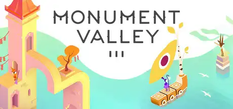
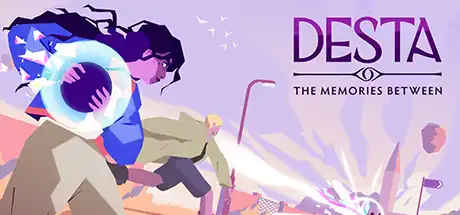
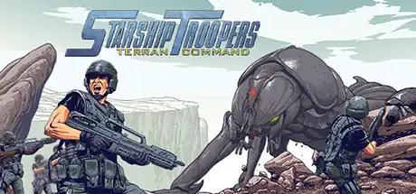
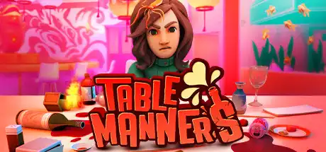
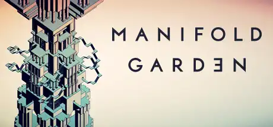
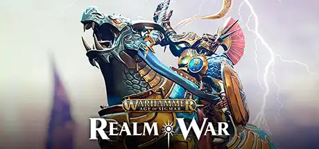
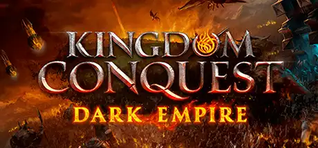

I'm a freelance programmer based in the UK, flexible when it comes to working across time-zones. My career started in 2013 after completing a Masters degree in Computer Science from the University of Warwick. Since then I've specialised in optimising Unity engine games, but have a broad skill set and find satisfaction in tackling problems in unfamiliar areas.
Likes: Deleting code, linear memory layouts, re-examining problems from first principles.
Dislikes: Complexity, slow software, logic scattered across 100s of files.
Hobbies: Writing music, creating low-poly 3D art, online multiplayer gaming.
"I worked with Craig for almost four years and he’s an absolute powerhouse of a programmer. If something ran at 1 FPS, Craig was the one who made it hit 60. Smart, reliable, great with artists, and genuinely fun to work with. I’d rehire him without hesitation."
Bulut Karakaya, Lead Programmer at ustwo games
"Working with Craig was a force multiplier for our team. He brought strong performance engineering discipline and helped us set up a robust core ECS system that unlocked broader improvements across the project. He’s highly effective to work with—clear communicator, fast iteration cycles, and uncompromising on quality."
Michiel Huygen, Lead Programmer at The Artistocrats
Projects
Monument Valley 3

Various optimisations.
Gameplay & tools programming.
Secondary character physics.
Desta: The Memories Between

UI programming.
Graphics optimisation.
Reactive dialogue system.
Gamepad support.
Starship Troopers: Terran Command

Rewrote and optimised numerous gameplay systems.
Implemented grid-based pathfinding with A* and Jump Point Search.
Optimised third-party decal projector plugin.
Table Manners

Wrote environmental system to simulate heat transfer, fire propagation and other object properties.
Optimised integration of fluid simulation plugin.
Manifold Garden

Wrote occlusion culling system for recursive portal rendering.
Implemented custom instanced LOD system built on top of BatchRendererGroup API.
Improved infrastructure for automated performance testing.
Warhammer Age of Sigmar: Realm War

Overhauled tutorial system.
Implemented matchmaking system.
Kingdom Conquest - Dark Empire

Built a data-binding system with a node graph editor, enabling artists to implement UI logic independently.
Responsible for client-side and server-side implementation of multiple gameplay systems.
Sonic Dash 2: Sonic Boom
UI programming.
Contributed to localisation and tutorial systems.
Crazy Taxi: City Rush
Implemented mission scripting system.
Took ownership of tutorial and UI systems.
Worked on plugin integrations for Android platform.